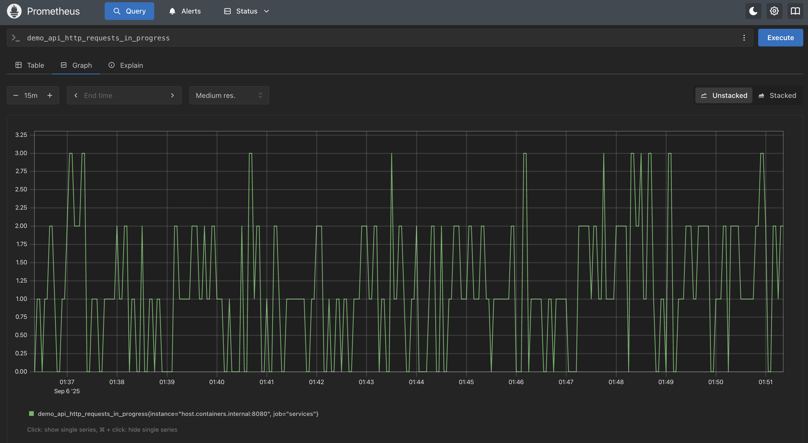
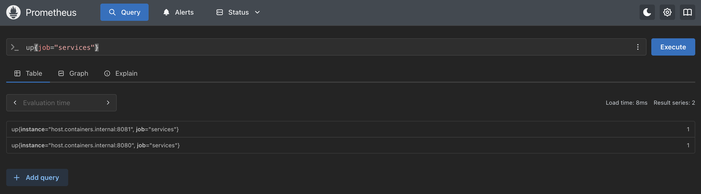

Services demo - Container installation notes
This lab guides you through installing the services demo using Podman, an open source container
tooling set that works on Mac OS X, Linux, and Windows systems. This workshop assumes you have
a working Podman installation from earlier labs in this workshop.
Note: if you need to install Podman, see the earlier lab for installing Prometheus in a container and return here when done.
Note: if you need to install Podman, see the earlier lab for installing Prometheus in a container and return here when done.
Services demo - Downloading the project
To install the services demo in a container we'll need the source project to build our
container. We're providing a self-contained project you can download, unzip,
and configure to build a container:
Click here to download the Prometheus Services Demo Installer.
Click here to download the Prometheus Services Demo Installer.
Services demo - Unzipping the project
Once you have downloaded the project using the link provided previously, just unzip into its
own directory as shown (Note: examples shown are on Mac OS X system):
$ unzip prometheus-service-demo-installer-v1.0.zip
creating: prometheus-service-demo-installer-v1.0/
inflating: prometheus-service-demo-installer-v1.0/.gitignore
inflating: prometheus-service-demo-installer-v1.0/README.md
creating: prometheus-service-demo-installer-v1.0/docs/
creating: prometheus-service-demo-installer-v1.0/docs/demo-images/
inflating: prometheus-service-demo-installer-v1.0/docs/demo-images/workshop.png
inflating: prometheus-service-demo-installer-v1.0/init.sh
creating: prometheus-service-demo-installer-v1.0/installs/
inflating: prometheus-service-demo-installer-v1.0/installs/README
creating: prometheus-service-demo-installer-v1.0/installs/demo/
inflating: prometheus-service-demo-installer-v1.0/installs/demo/Buildfile
inflating: prometheus-service-demo-installer-v1.0/installs/demo/Dockerfile
inflating: prometheus-service-demo-installer-v1.0/installs/demo/LICENSE
inflating: prometheus-service-demo-installer-v1.0/installs/demo/README.md
...
creating: prometheus-service-demo-installer-v1.0/support/
extracting: prometheus-service-demo-installer-v1.0/support/README
inflating: prometheus-service-demo-installer-v1.0/support/unzip.vbs
inflating: prometheus-service-demo-installer-v1.0/support/workshop-prometheus.yml
Services demo - Building a container image
Now you can build your own container image with the provided build file (output has been
abbreviated to save space):
$ podman build -t prometheus_services_demo:v1 -f installs/demo/Buildfile
[1/2] STEP 1/5: FROM golang:1.17-alpine AS builder
[1/2] STEP 2/5: WORKDIR /source
[1/2] STEP 3/5: COPY . /source
[1/2] STEP 4/5: RUN go mod download
[1/2] STEP 5/5: RUN go build -v -o prometheus_demo_service .
[2/2] STEP 1/4: FROM alpine:3
[2/2] STEP 2/4: COPY --from=builder /source/prometheus_demo_service /bin/prometheus_demo_service
[2/2] STEP 3/4: EXPOSE 8080
[2/2] STEP 4/4: ENTRYPOINT [ "/bin/prometheus_demo_service" ]
[2/2] COMMIT prometheus_services_demo:v1
Successfully tagged localhost/prometheus_services_demo:v1
f0f7afad800b643a40938e04c1dd2d6c394fb6c0197929e3db40df2e425a8127
Services demo - Verifying built image
Looking up our built images to verify everything went well, and we should see something like this:
$ podman images
REPOSITORY TAG IMAGE ID CREATED SIZE
localhost/prometheus_services_demo v1 231a2e5431b4 4 seconds ago 21.2 MB
docker.io/library/alpine 3 f6648c04cd6c 2 days ago 7.95 MB
docker.io/library/golang 1.17-alpine 0ebb35c98346 12 months ago 321 MB
Services demo - Start your demo engines!
Now it's time to start the services demo in a container mapping our port 8080 to the containers
exposed port 8080:
$ podman run -p 8080:8080 prometheus_services_demo:v1
e924f60535bf8fa1b80a7dc2f18574223f0cb44468362fc2b4a78471af5aafbc
Services demo - Testing the metrics
After starting the services container, it should have metrics scraping endpoints available so
that you can query them with PromQL. Test at
http://localhost:8080/metrics:
# HELP demo_api_http_requests_in_progress The current number of API HTTP requests in progress.
# TYPE demo_api_http_requests_in_progress gauge
demo_api_http_requests_in_progress 1
# HELP demo_api_request_duration_seconds A histogram of the API HTTP request durations in seconds.
# TYPE demo_api_request_duration_seconds histogram
demo_api_request_duration_seconds_bucket{method="GET",path="/api/bar",status="200",le="0.0001"} 0
demo_api_request_duration_seconds_bucket{method="GET",path="/api/bar",status="200",le="0.00015000000000000001"} 0
demo_api_request_duration_seconds_bucket{method="GET",path="/api/bar",status="200",le="0.00022500000000000002"} 0
demo_api_request_duration_seconds_bucket{method="GET",path="/api/bar",status="200",le="0.0003375"} 0
demo_api_request_duration_seconds_bucket{method="GET",path="/api/bar",status="200",le="0.00050625"} 0
demo_api_request_duration_seconds_bucket{method="GET",path="/api/bar",status="200",le="0.000759375"} 0
demo_api_request_duration_seconds_bucket{method="GET",path="/api/bar",status="200",le="0.0011390624999999999"} 0
demo_api_request_duration_seconds_bucket{method="GET",path="/api/bar",status="200",le="0.0017085937499999998"} 0
demo_api_request_duration_seconds_bucket{method="GET",path="/api/bar",status="200",le="0.0025628906249999996"} 0
demo_api_request_duration_seconds_bucket{method="GET",path="/api/bar",status="200",le="0.0038443359374999994"} 0
...
Prometheus - Adjusting settings live
Using this container image we built means any changes you need to make to the configuration
that were in the flags used to start the server will require a new image be built. The old
container stopped, and the new container started using the new image.
Now let's figure out the actual IP address of the containers on our local machine so that we can update the static Prometheus scrap configuration to dynamically find and start collecting data from our services demo.
Now let's figure out the actual IP address of the containers on our local machine so that we can update the static Prometheus scrap configuration to dynamically find and start collecting data from our services demo.
Intermezzo - Discovering container IP addresses
When using containers, Prometheus needs their container IP address as it can not resolve
localhost to different containers. To do this we can use the following variable provided
by Podman to update our Prometheus configuration
target lines to
automatically use the assigned IP address:
- target ["host.containers.internal:PORT_NUMBER"]
Note: if you are using Docker tooling, then your configuration should use the following variable
to automatically use the assigned IP address:
- target ["host.docker.internal:PORT_NUMBER"]
Services demo - Prometheus configuration updates
While the metrics are exposed, they will not be scraped by Prometheus until you have updated its
configuration to add this new end point. Let's update our
workshop-prometheus.yml
file to add the services job as shown along with comments for clarity (noting that the IP
address for the services demo is the variable from the previous slide):
scrape_configs:
# Scraping Prometheus.
- job_name: "prometheus"
static_configs:
- targets: ["localhost:9090"]
# Scraping services demo.
- job_name: "services"
static_configs:
- targets: ["host.containers.internal:8080"]
Installation - Creating container build file
Next you can use any editor you like, but create a file called
Buildfile
with the following which you can use through cut-and-pasting:
FROM prom/prometheus:v3.13.1
ADD workshop-prometheus.yml /etc/prometheus
Services demo - Rebuilding a new Prometheus image
Now you can rebuild your Prometheus container image with our new configuration inserted:
$ podman build -t workshop-prometheus:v3.13 -f Buildfile
STEP 1/2: FROM prom/prometheus:v3.13.1
STEP 2/2: ADD workshop-prometheus.yml /etc/prometheus
COMMIT workshop-prometheus:v3.13
--> b63d3b6d2139
Successfully tagged localhost/workshop-prometheus:v3.13
b63d3b6d2139c3a28eeab4b8d65169a1b4d77da503c51a587340e0a1b0a52b8a
Services demo - Restart your Prometheus image
First you stop the running container, then start it again as we did before, but this time the
newest rebuilt image will be used (scroll to view code):
$ podman run -p 9090:9090 workshop-prometheus:v3.13 --config.file=/etc/prometheus/workshop-prometheus.yml
...
time=2026-07-31T11:24:52.417Z level=INFO source=main.go:1724 msg="updated GOGC" old=100 new=75
time=2026-07-31T11:24:52.417Z level=INFO source=main.go:789 msg="Leaving GOMAXPROCS=9: CPU quota undefined" component=automaxprocs
time=2026-07-31T11:24:52.417Z level=INFO source=memlimit.go:198 msg="GOMEMLIMIT is updated" component=automemlimit package=github.com/KimMachineGun/automemlimit/memlimit GOMEMLIMIT=1829025792 previous=9223372036854775807
time=2026-07-31T11:24:52.418Z level=INFO source=main.go:896 msg="Starting Prometheus Server" mode=server version="(version=3.13.1, branch=HEAD, revision=73ff57ce2b8161059ac7fe5188f03f1c3d22b29a)"
time=2026-07-31T11:24:52.418Z level=INFO source=main.go:901 msg="operational information" build_context="(go=go1.26.5, platform=linux/arm64, user=root@6a98665b49f7, date=20260710-08:21:41, tags=netgo,builtinassets)" host_details="(Linux 7.1.3-200.fc44.aarch64 #1 SMP PREEMPT_DYNAMIC Sat Jul 4 19:23:52 UTC 2026 aarch64 64589d0f8ec1 (none))" fd_limits="(soft=524288, hard=524288)" vm_limits="(soft=unlimited, hard=unlimited)"
time=2026-07-31T11:24:52.482Z level=INFO source=web.go:727 msg="Start listening for connections" component=web address=0.0.0.0:9090
time=2026-07-31T11:24:52.483Z level=INFO source=main.go:1456 msg="Starting TSDB ..."
time=2026-07-31T11:24:52.483Z level=INFO source=tls_config.go:354 msg="Listening on" component=web address=[::]:9090
time=2026-07-31T11:24:52.483Z level=INFO source=tls_config.go:357 msg="TLS is disabled." component=web http2=false address=[::]:9090
time=2026-07-31T11:24:52.484Z level=INFO source=head.go:709 msg="Replaying on-disk memory mappable chunks if any" component=tsdb
time=2026-07-31T11:24:52.484Z level=INFO source=head.go:795 msg="On-disk memory mappable chunks replay completed" component=tsdb duration=833ns
time=2026-07-31T11:24:52.484Z level=INFO source=head.go:803 msg="Replaying WAL, this may take a while" component=tsdb
time=2026-07-31T11:24:52.484Z level=INFO source=head.go:898 msg="WAL segment loaded" component=tsdb segment=0 maxSegment=0 duration=118.375µs
time=2026-07-31T11:24:52.484Z level=INFO source=head.go:935 msg="WAL replay completed" component=tsdb checkpoint_replay_duration=16.583µs wal_replay_duration=137.5µs wbl_replay_duration=125ns chunk_snapshot_load_duration=0s mmap_chunk_replay_duration=833ns total_replay_duration=162.416µs
time=2026-07-31T11:24:52.485Z level=INFO source=main.go:1477 msg="filesystem information" fs_type=XFS_SUPER_MAGIC
time=2026-07-31T11:24:52.485Z level=INFO source=main.go:1480 msg="TSDB started"
time=2026-07-31T11:24:52.485Z level=INFO source=main.go:1678 msg="Loading configuration file" filename=/etc/prometheus/workshop-prometheus.yml
time=2026-07-31T11:24:52.485Z level=INFO source=main.go:1094 msg="TSDB retention updated" duration=15d size=0B percentage=0
time=2026-07-31T11:24:52.486Z level=INFO source=main.go:1717 msg="Completed loading of configuration file" db_storage=15.083µs remote_storage=1.083µs web_handler=167ns query_engine=458ns scrape=241.166µs scrape_sd=28.708µs notify=625ns notify_sd=458ns rules=875ns tracing=3.375µs filename=/etc/prometheus/workshop-prometheus.yml totalDuration=402.75µs
time=2026-07-31T11:24:52.486Z level=INFO source=main.go:1441 msg="Server is ready to receive web requests."
time=2026-07-31T11:24:52.486Z level=INFO source=manager.go:211 msg="Starting rule manager..." component="rule manager"
Services demo - Validating setup
The last check to make sure it's working, execute
demo_api_http_requests_in_progress in the Prometheus console to generate a
graph output something like the following:

Services demo - Starting multiple instances
The output is more interesting if you have multiple instances of the services demo running. This
is pretty easy by just starting a new container with different port mapping. Let's start a
second services demo in a new container and map our local machine port 8081 (or any other open
port you have) to the container port 8080 as follows:
$ podman run -p 8081:8080 prometheus_services_demo:v1
Services demo - Testing the metrics
After starting the services binary as shown in the terminal output, it should have metrics
scraping end points available so that you can query them with PromQL. Test at
http://localhost:8081/metrics:
# HELP demo_api_http_requests_in_progress The current number of API HTTP requests in progress.
# TYPE demo_api_http_requests_in_progress gauge
demo_api_http_requests_in_progress 1
# HELP demo_api_request_duration_seconds A histogram of the API HTTP request durations in seconds.
# TYPE demo_api_request_duration_seconds histogram
demo_api_request_duration_seconds_bucket{method="GET",path="/api/bar",status="200",le="0.0001"} 0
demo_api_request_duration_seconds_bucket{method="GET",path="/api/bar",status="200",le="0.00015000000000000001"} 0
demo_api_request_duration_seconds_bucket{method="GET",path="/api/bar",status="200",le="0.00022500000000000002"} 0
demo_api_request_duration_seconds_bucket{method="GET",path="/api/bar",status="200",le="0.0003375"} 0
demo_api_request_duration_seconds_bucket{method="GET",path="/api/bar",status="200",le="0.00050625"} 0
demo_api_request_duration_seconds_bucket{method="GET",path="/api/bar",status="200",le="0.000759375"} 0
demo_api_request_duration_seconds_bucket{method="GET",path="/api/bar",status="200",le="0.0011390624999999999"} 0
demo_api_request_duration_seconds_bucket{method="GET",path="/api/bar",status="200",le="0.0017085937499999998"} 0
demo_api_request_duration_seconds_bucket{method="GET",path="/api/bar",status="200",le="0.0025628906249999996"} 0
demo_api_request_duration_seconds_bucket{method="GET",path="/api/bar",status="200",le="0.0038443359374999994"} 0
...
Services demo - Prometheus configuration updates
Now we need to update our
workshop-prometheus.yml file to add the new
services demo instance:
scrape_configs:
# Scraping Prometheus.
- job_name: "prometheus"
static_configs:
- targets: ["localhost:9090"]
# Scraping services demo.
- job_name: "services"
static_configs:
- targets: ["host.containers.internal:8080"]
- targets: ["host.containers.internal:8081"]
Services demo - Rebuilding a new Prometheus image
Now you can rebuild your Prometheus container image with our new configuration inserted:
$ podman build -t workshop-prometheus:v3.13 -f Buildfile
STEP 1/2: FROM prom/prometheus:v3.13.1
STEP 2/2: ADD workshop-prometheus.yml /etc/prometheus
COMMIT workshop-prometheus:v3.13
--> b63d3b6d2139
Successfully tagged localhost/workshop-prometheus:v3.13
b63d3b6d2139c3a28eeab4b8d65169a1b4d77da503c51a587340e0a1b0a52b8a
Services demo - Restart your Prometheus image
First you stop the running container, then start it again as we did before, but this time the
newest rebuilt image will be used (scroll to view code):
$ podman run -p 9090:9090 workshop-prometheus:v3.13 --config.file=/etc/prometheus/workshop-prometheus.yml
...
time=2026-07-31T11:24:52.417Z level=INFO source=main.go:1724 msg="updated GOGC" old=100 new=75
time=2026-07-31T11:24:52.417Z level=INFO source=main.go:789 msg="Leaving GOMAXPROCS=9: CPU quota undefined" component=automaxprocs
time=2026-07-31T11:24:52.417Z level=INFO source=memlimit.go:198 msg="GOMEMLIMIT is updated" component=automemlimit package=github.com/KimMachineGun/automemlimit/memlimit GOMEMLIMIT=1829025792 previous=9223372036854775807
time=2026-07-31T11:24:52.418Z level=INFO source=main.go:896 msg="Starting Prometheus Server" mode=server version="(version=3.13.1, branch=HEAD, revision=73ff57ce2b8161059ac7fe5188f03f1c3d22b29a)"
time=2026-07-31T11:24:52.418Z level=INFO source=main.go:901 msg="operational information" build_context="(go=go1.26.5, platform=linux/arm64, user=root@6a98665b49f7, date=20260710-08:21:41, tags=netgo,builtinassets)" host_details="(Linux 7.1.3-200.fc44.aarch64 #1 SMP PREEMPT_DYNAMIC Sat Jul 4 19:23:52 UTC 2026 aarch64 64589d0f8ec1 (none))" fd_limits="(soft=524288, hard=524288)" vm_limits="(soft=unlimited, hard=unlimited)"
time=2026-07-31T11:24:52.482Z level=INFO source=web.go:727 msg="Start listening for connections" component=web address=0.0.0.0:9090
time=2026-07-31T11:24:52.483Z level=INFO source=main.go:1456 msg="Starting TSDB ..."
time=2026-07-31T11:24:52.483Z level=INFO source=tls_config.go:354 msg="Listening on" component=web address=[::]:9090
time=2026-07-31T11:24:52.483Z level=INFO source=tls_config.go:357 msg="TLS is disabled." component=web http2=false address=[::]:9090
time=2026-07-31T11:24:52.484Z level=INFO source=head.go:709 msg="Replaying on-disk memory mappable chunks if any" component=tsdb
time=2026-07-31T11:24:52.484Z level=INFO source=head.go:795 msg="On-disk memory mappable chunks replay completed" component=tsdb duration=833ns
time=2026-07-31T11:24:52.484Z level=INFO source=head.go:803 msg="Replaying WAL, this may take a while" component=tsdb
time=2026-07-31T11:24:52.484Z level=INFO source=head.go:898 msg="WAL segment loaded" component=tsdb segment=0 maxSegment=0 duration=118.375µs
time=2026-07-31T11:24:52.484Z level=INFO source=head.go:935 msg="WAL replay completed" component=tsdb checkpoint_replay_duration=16.583µs wal_replay_duration=137.5µs wbl_replay_duration=125ns chunk_snapshot_load_duration=0s mmap_chunk_replay_duration=833ns total_replay_duration=162.416µs
time=2026-07-31T11:24:52.485Z level=INFO source=main.go:1477 msg="filesystem information" fs_type=XFS_SUPER_MAGIC
time=2026-07-31T11:24:52.485Z level=INFO source=main.go:1480 msg="TSDB started"
time=2026-07-31T11:24:52.485Z level=INFO source=main.go:1678 msg="Loading configuration file" filename=/etc/prometheus/workshop-prometheus.yml
time=2026-07-31T11:24:52.485Z level=INFO source=main.go:1094 msg="TSDB retention updated" duration=15d size=0B percentage=0
time=2026-07-31T11:24:52.486Z level=INFO source=main.go:1717 msg="Completed loading of configuration file" db_storage=15.083µs remote_storage=1.083µs web_handler=167ns query_engine=458ns scrape=241.166µs scrape_sd=28.708µs notify=625ns notify_sd=458ns rules=875ns tracing=3.375µs filename=/etc/prometheus/workshop-prometheus.yml totalDuration=402.75µs
time=2026-07-31T11:24:52.486Z level=INFO source=main.go:1441 msg="Server is ready to receive web requests."
time=2026-07-31T11:24:52.486Z level=INFO source=manager.go:211 msg="Starting rule manager..." component="rule manager"
Services demo - Validating setup
The last check makes sure it's working by executing
up{job="services"}
in the Prometheus console validating both instances are being scraped:

Services demo - Removing second demo instance
The final exercise is for you to stop the second services demo container, remove the target
for 8081 from your Prometheus configuration, stop the Prometheus container, rebuild the
Prometheus container with the updated configuration, and restart a Prometheus container that
is only scraping Prometheus and one services demo on port 8080.
Lab completed - Results
Next up, exploring basic queries...

Contact - are there any questions?
Eric D. Schabell
Director Evangelism
Contact: @ericschabell {@fosstodon.org) or https://www.schabell.org
Director Evangelism
Contact: @ericschabell {@fosstodon.org) or https://www.schabell.org